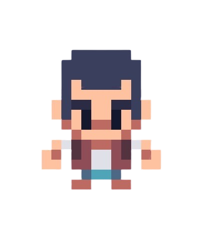
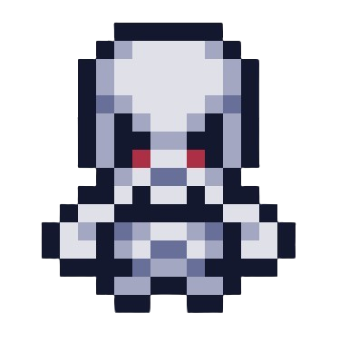

Personagem Principal
Esse é o personagem da nossa aventura, ele é um simples camponês em busca de um tesouro.
Nosso personagem acabou entrando em uma floresta sombria e maligna, em sua procura ao
tesouro, ele acabou encontrando esqueletos que queriam o seu fim.
Inimigo do Jogo
Estes eslequetos são os cadáveres de antigos aventureiros, que não sobreviveram
e estão vagando na floresta, eles são agresivos contra novos rostos.
Báu do Tesouro

Esse báu cobiçado por muitos, mas alcançados por poucos, está cheio
de tesouros misteriosos, que só quem abrir vai saber.
Talvez tenha ouro, ou relíquias de um tempo muito antigo, somento
aventureiros capazes vão conseguir descobrir.